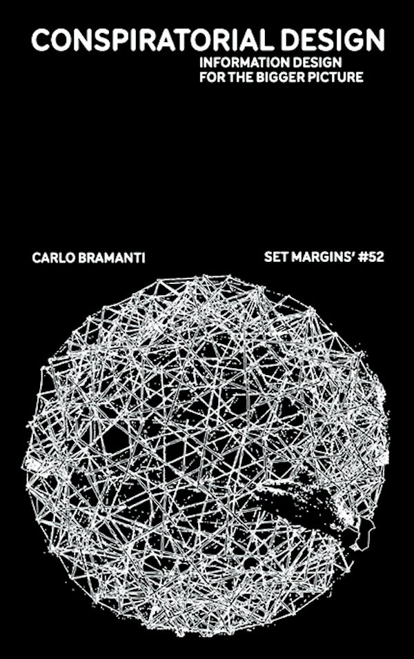

MEDIA ARTRadar↗
05 个国际机会
02 个本周作品
核验于
本期内容已超过 8 天，请留意核验日期与官方变更。
[01]
国际机会精选Open calls.
推荐顺序综合媒介相关性、机构影响力与创作支持，不是官方排名。
本期暂无此类机会。
展览征集·德国 Osnabrück
项目2027.04
EMAF 40 / European Media Art Festival 2027
艺术节作品征集 · Film / Installation / Expanded
德国 Osnabrück；装置展在 Kunsthalle Osnabrück。
官方页面
项目详情
资助与支持
International Selection 每部 €400；Features 放映费 €250；装置及 Expanded 项目酬金 €500，制作费用由艺术节承担，具体预算须协商。
条件
- 时间
- 艺术节 2027-04-21 至 25；展览 2027-04-21 至 05-23
- 交通
- 入选者获交通费用补助；金额未公布
- 住宿
- 提供 3 晚酒店；搭建需要时可能延长
- 申请费
- 免费
- 资格
- 每位艺术家最多 2 件；作品完成于 2026 或 2027 年；无首映要求；非英语作品须提供英语字幕
- 适合
- 实验影像、交互／空间装置、VR、表演和现场形式。装置单元须回应 archive 主题
为什么推荐
与媒体考古、数字档案及实验影像尤其贴合；有展陈、酬金和差旅支持。
核验于 2026-09-17 · 收到 2,200 件投稿即提前关闭。官方未注明时分／时区，建议尽早提交。
展览征集·德国 Berlin
项目2027.01
CTM 2027 / Resynthesising the Traditional
艺术研究实验室 · 后续委约机会
德国 Berlin
官方页面
项目详情
资助与支持
提供餐食、CTM 通票及必要签证费支持，未公布现金 stipend。参与者后续可申请内部委约，最多 2 件作品可能在 CTM 2028 呈现，不是保证入选。
条件
- 时间
- 2027-01-25 至 31；1 月 24 日抵达，2 月 1 日离开；1 月 26 日公开呈现
- 交通
- 每人最高 €300；洲际交通可能需要自付差额
- 住宿
- 实验室期间提供住宿
- 申请费
- 官方页面未说明
- 资格
- 全球开放，最多 6 名；仅个人艺术家／solo 项目，需全程参与；建议具备工作英语
- 适合
- 声音艺术、实验音乐、乐器／技术研究，以及传统、身体、极端经验之间的跨学科实践
为什么推荐
主题集中，有研究交流与后续委约路径；适合把技术或声音实验与文化政治问题联系起来的项目。
核验于 2026-09-17 · 官方未注明时分／时区，建议 9 月 27 日前提交。
驻留·欧洲 15 家机构
项目2027
EMAP Residencies 2027 / European Media Art Platform
两个月制作驻留
欧洲 15 家成员机构之一
官方页面
项目详情
资助与支持
主申请艺术家 €4,000（含生活费），合作艺术家 €2,000；双人组共 €6,000；另有 €4,000 制作预算。
条件
- 时间
- 2027 年两个月；启动会议 2027-03-11 至 12，西班牙 Gijón
- 交通
- 接待机构按欧盟上限承担交通费用
- 住宿
- 接待机构提供住宿
- 申请费
- 官方主页未说明；不推定免费
- 资格
- 须为欧盟成员国或官方列明的合资格国家居民／纳税人；须以双人／集体或合作项目申请。仅居住中国大陆不能据此推定符合资格
- 适合
- 数字、媒体、机器人、生物艺术，尤其需要实验室、技术支持与跨学科合作的制作计划
为什么推荐
报酬、制作经费与机构网络都明确；居住／纳税资格是首要筛选条件。
核验于 2026-09-17 · 14:00 CET（北京时间 21:00）。
驻留·美国 New York
项目2027
Wave Farm / Research and Production Program 2027
Transmission Art · Spatial Sound 驻留与 Radio Art Fellowship
美国纽约州 Acra / Catskill
官方页面
项目详情
资助与支持
驻留 stipend $1,000；Fellowship $2,000。提供研究与设备资源，空间声音方向可使用八声道工作室。
条件
- 时间
- 2027 年；驻留 10 天，Fellowship 两个月（含 10 天现场）
- 交通
- 长途交通与餐食自理；可提供车站或机场接送
- 住宿
- 提供 Study Center 住宿与工作空间
- 申请费
- 项目页面未说明
- 资格
- 国际开放；需证明传输艺术相关实践。全日制学生通常不符合；DJ sets 不符合
- 适合
- 无线电、广播、信号接收与传输、声音档案、空间声音及其媒介考古
为什么推荐
传输与接收本身是作品核心，不是泛音频创作驻留。
核验于 2026-09-17 · 23:59 EST（北京时间 12 月 2 日 12:59）。
学术会议·西班牙 Bilbao
项目2027.05
Technarte Bilbao 2027 / Call for Papers
艺术与科技会议 · 演讲征集
西班牙 Bilbao，Palacio Euskalduna
官方页面
项目详情
资助与支持
本次公开征集页未明确演讲费或制作资助；不能按资助型驻留理解。
条件
- 时间
- 2027-05-21
- 交通
- 本次公开征集页未明确
- 住宿
- 本次公开征集页未明确
- 申请费
- 本次公开征集页未明确
- 资格
- 全球艺术家、研究者、科学家与技术创作者；提交项目标题、摘要和演讲概述
- 适合
- CGI、AI、3D 扫描、交互装置、VR、游戏、机器人和数据艺术中的方法与作品分享
为什么推荐
适合已有项目、希望进入艺术科技专业交流网络的创作者；它是演讲发表机会，不是制作委约。
核验于 2026-09-17 · 23:59 Europe/Brussels（北京时间 10 月 16 日 05:59）。

生成艺术 / 生态与技术史 · 图像来源 Neural
(di)atomic garden
Entangled Others（Sofia Crespo、Feileacan）
借战后"原子花园"的辐射育种实验，把历史农作物图像与南极浮游生物样本转成数字遗传材料，在实时系统中以放射性衰变驱动虚拟生命的持续变异。
阅读原文 ↗

理论出版物 / 信息设计与网络文化 · 图像来源 Neural
Conspiratorial Design
Carlo Bramanti
数据的选择、关系图谱与叙事如何让阴谋论显得有理有据？书中把信息设计的方法与制造关联的社会叙事并置。
阅读原文 ↗
本期范围与核验说明
首期提前于 9 月 17 日发布，重点核查 9 月 10–17 日新信息；首次机会扫描也纳入仍开放的高相关项目。Rhizome 正文抓取受限；Ars Electronica 活动页复核受限，本期未纳入未充分核验的细节。仅公布截止日期的项目不推断官方精确时刻，机器字段采用保守日期边界。EMAF 与 EMAP 为不同项目。